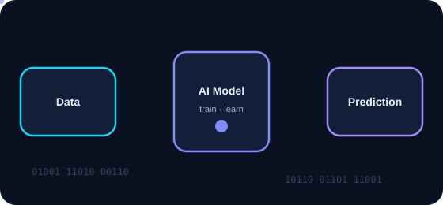

Narrow AI (ANI)
Masters a single task — translation, recommendations, medical scans. Every AI you use today, from maps to chatbots, is narrow AI. It can beat humans at its task but knows nothing else.
Skip the science-fiction hype. In plain words: AI is software that performs tasks which normally need human intelligence — seeing, speaking, reasoning and learning.
A traditional program follows instructions written by a programmer:
if this, then that. An AI system is different — humans give it data and a
goal, and it figures out the rules itself. Show it a million photos labelled
"cat" and "dog", and it learns to tell them apart without a single
if statement.
The field was formally born in 1956, when computer scientist John McCarthy organised the Dartmouth Workshop and coined the term "Artificial Intelligence". His famous test asked a deep question: if a machine can converse so well that you cannot tell it from a human, should we call it intelligent?

AI research has never moved in a straight line — it has had golden ages and "AI winters" too.
Alan Turing publishes Computing Machinery and Intelligence and proposes his famous imitation game, now called the Turing Test.
At the Dartmouth Workshop, John McCarthy, Marvin Minsky and colleagues define Artificial Intelligence as a research field.
Companies spend heavily on rule-based "expert systems" that mimic specialists — then interest collapses when they prove brittle and expensive.
IBM's Deep Blue defeats world chess champion Garry Kasparov — a global shock that proves search and evaluation can beat human intuition.
A deep neural network wins the ImageNet image-recognition contest by a landslide, launching the modern deep-learning era.
Google researchers publish "Attention Is All You Need", the architecture behind today's large language models.
ChatGPT reaches 100 million users in two months. Generative AI moves from research labs into classrooms, offices and homes worldwide.
They differ by capability — and only the first one exists today.
Masters a single task — translation, recommendations, medical scans. Every AI you use today, from maps to chatbots, is narrow AI. It can beat humans at its task but knows nothing else.
A hypothetical system that could learn and apply intelligence to any intellectual task a human can — flexible, curious and adaptable. Researchers are working toward it, but it does not exist yet.
Science-fiction territory: a mind that surpasses humans in every field, from science to creativity. No evidence it is possible — which is exactly why ethicists debate it so passionately.

Machine learning turns programming upside down: instead of writing rules, you supply data. The algorithm adjusts thousands (or billions) of internal parameters until its predictions match the examples — a process called training.
Deep learning stacks many layers of neural networks on top of each other. Early layers learn simple features (edges, tones), middle layers combine them into shapes, and the deepest layers recognise concepts like "face" or "word". That is why deep networks need huge amounts of data and powerful GPUs.
"I propose to consider the question, 'Can machines think?'"
— Alan Turing, Computing Machinery and Intelligence (1950)
Discover how AI is already changing hospitals, roads, classrooms and cinemas.